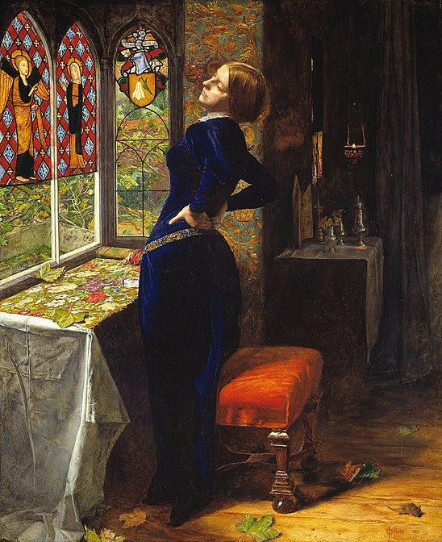

Картинная галерея портретов
 Портрет нотариуса
Портрет нотариуса
“Мэриан”
Роскошь картины напоминает об окладах средневековых книг, инкрустированных драгоценными камнями. Гипнотическая религиозная атмосфера и все убранство комнаты с витражами и стенами, обитыми бархатом, отражают вкус викторианской эпохи, ценившей тонкое мастерство в предметах декоративного искусства, вдохновленных готическими образцами. Превосходно проработанные детали - от изображения сада за окном до изысканной вышивки на столе, выполненной руками Мэриан, а также сюжет картины, взятый из стихотворения современного поэта Теннисона, - отражаютосновные особенности движения прерафаэлитов. Среди викторианских живописцев Миллес был, пожалуй, самым известным. Модный художник, блестяще владевший техникой академической живописи, он был одним из основателей движения прерафаэлитов, которое стремилось подражать художникам, работавшим до Рафаэля, олицетворяя стиль Высокого Возрождения. Свою задачу прерафаэлиты видели в возвращении к искренности и чистоте, а также к ясности деталей, отличавших религиозное искусство Раннего Возрождения. Берн-Джонс, Хант, Симоне Мартини, Рафаэль, Россетти.
 “Старуха из богадельни”
“Старуха из богадельни”